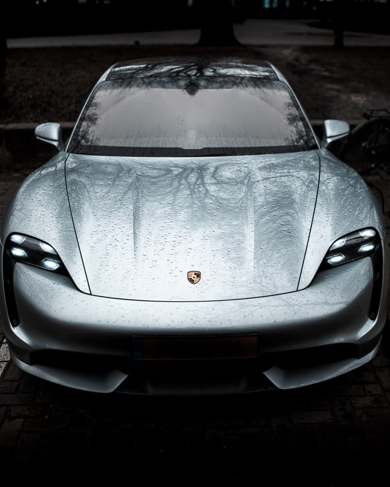

Porsche Taycan არის ბატარეის ელექტრო სალონი და სროლის ბრეიკი, რომელიც წარმოებულია გერმანული ავტომობილების მწარმოებლის Porsche-ს მიერ 2019 წელს. Taycan-ის კონცეპტუალური ვერსია, სახელად Porsche Mission E, დებიუტი შედგა 2015 წლის ფრანკფურტის მოტორ შოუზე. Taycan გამოვლინდა 2019 წლის ფრანკფურტის მოტორ შოუზე სრულად წარმოებისთვის. როგორც Porsche-ს პირველი სერიის წარმოების ელექტრო მანქანა, ის იყიდება რამდენიმე ვარიანტში სხვადასხვა შესრულების დონეზე და შესაძლოა შემდგომ მოდელებში წარმოქმნას შემდგომი წარმოებულები. 20000-ზე მეტი Taycan მიწოდებული იქნა 2020 წელს, მისი სადებიუტო გაყიდვების წელს, რაც წარმოადგენს Porsche-ს მთლიანი მოცულობის 7.4%-ს. მოდიფიცირებული Taycan S არის ამჟამინდელი ფორმულა E უსაფრთხოების მანქანა.